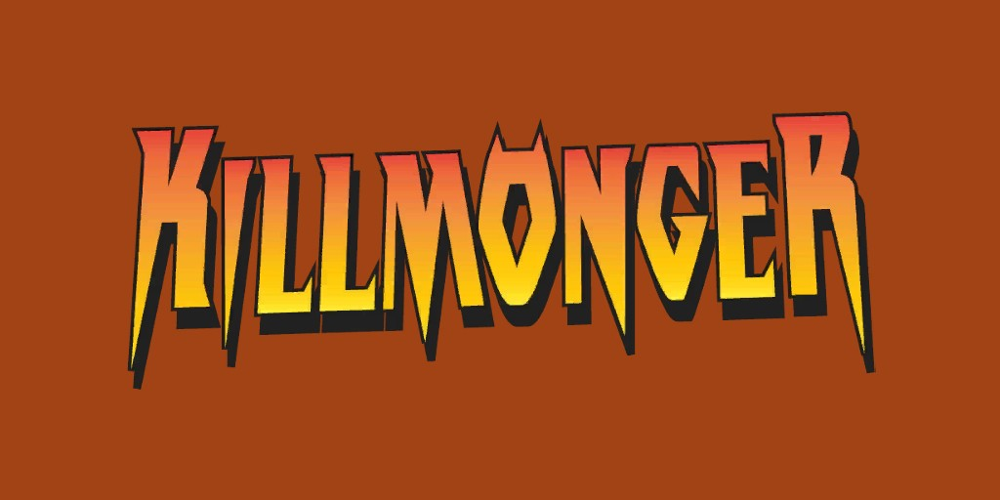
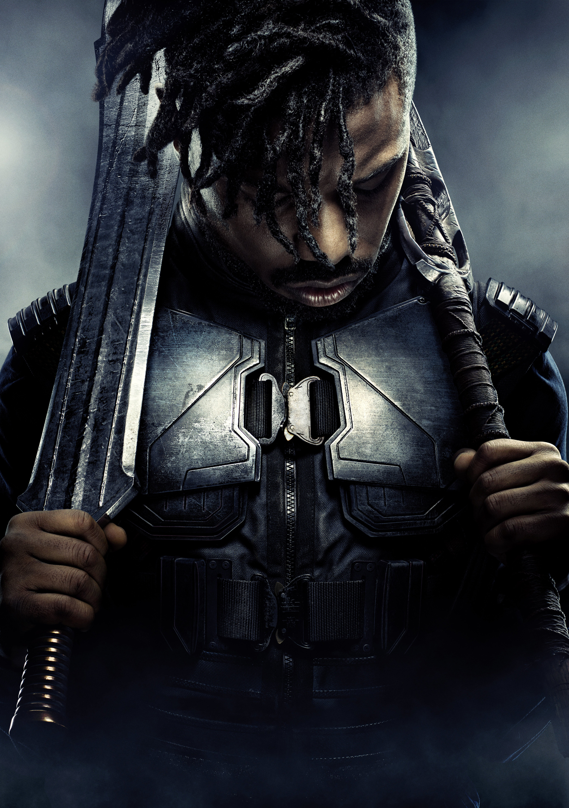
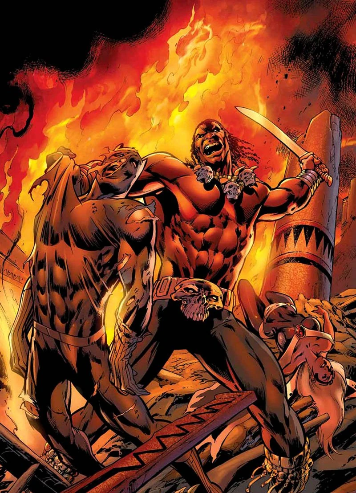
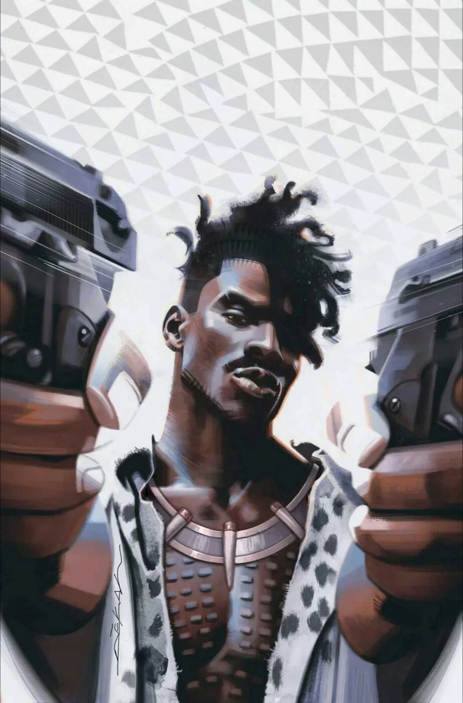
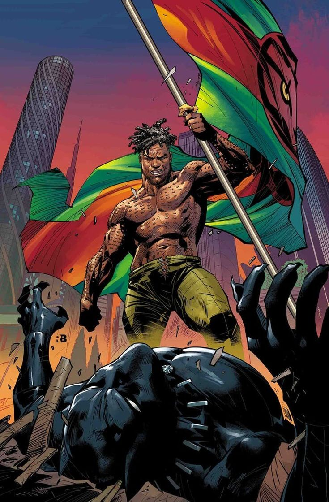
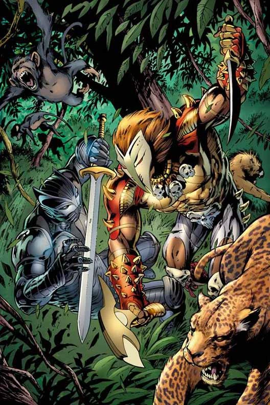
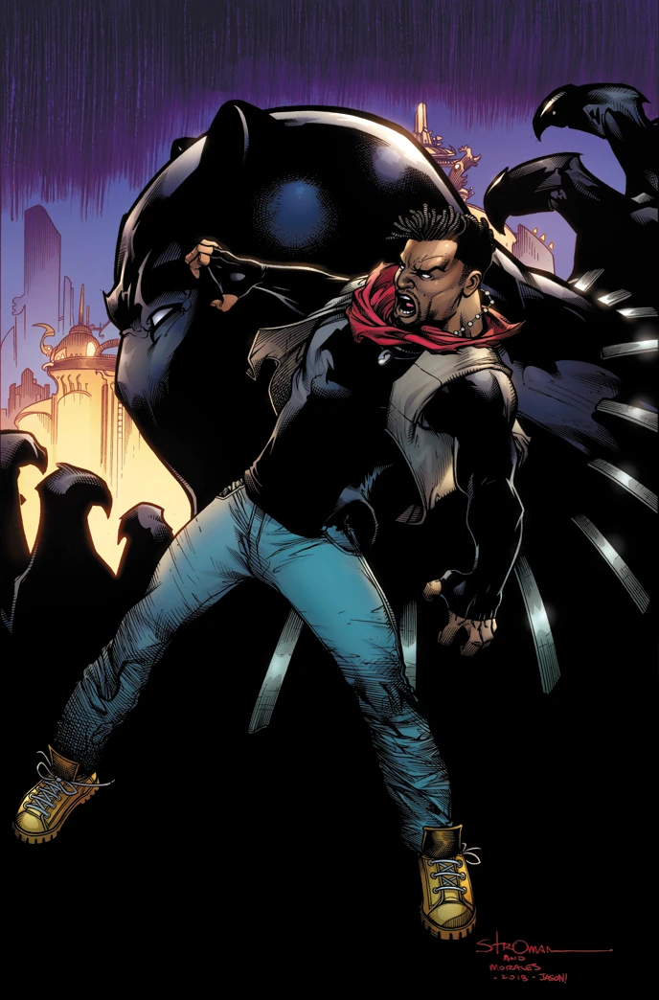
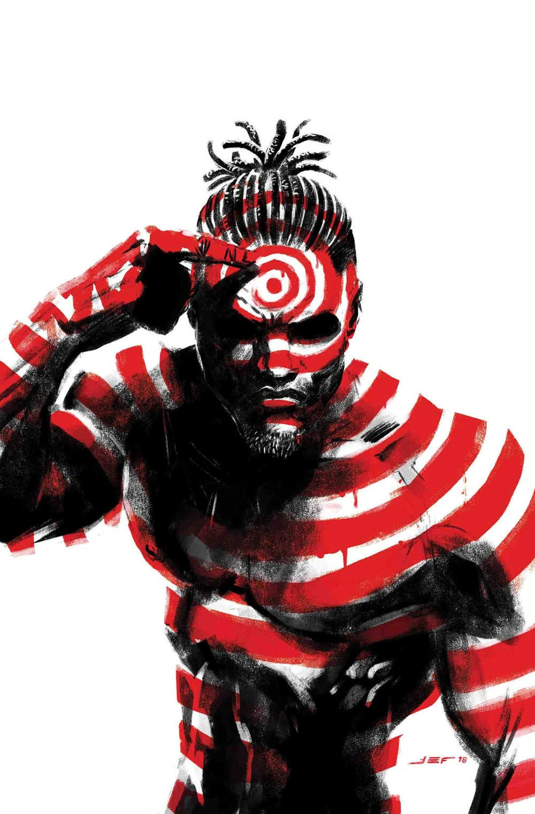
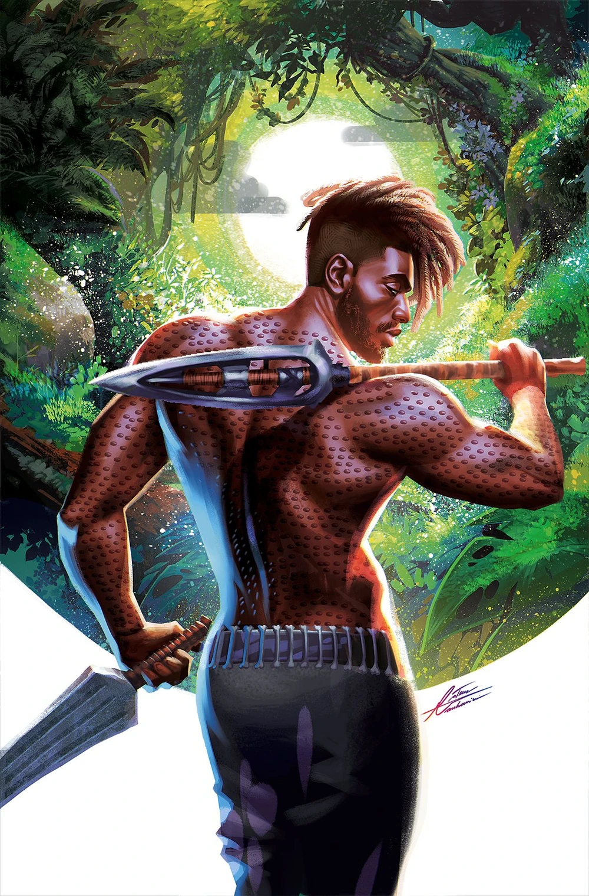

Killmonger (Erik Killmonger) (Terre-616)

Origines :
Originaire du Wakanda, Killmonger naît sous le nom de N'Jadaka.
Lorsque le super-vilain Ulysses Klaue et ses mercenaires attaquent le Wakanda grâce à un allié infiltré, M'Demwe, qui complota pour usurper le trône du Black Panther.
Durant la bataille, la famille de N'Jadaka est assassinée par M'Demwe, qui le kidnappa et s'enfuit avec lui hors du royaume après la mort du roi T'Chaka.
Pendant leur exil, le perfide M'Demwe joua le rôle de figure paternelle autoritaire envers N'Jadaka alors qu'ils voyageaient à l'étranger.
Il sera manipulé par son père pendant des années, qui le força à voler pour lui jusqu'à ce que Klaw ne lui ordonne de renoncer à sa vie et de l'adorer comme un dieu : il lui donna même un nouveau nom, « Erik ».
Pendant quelques temps, N'Jadaka continua ses crimes pour ses gardiens, ce qui le rendit de plus en plus amer et rancunier, principalement envers M'Demwe, Klaw, et le royaume qui l'avait exilé.
Il finira par tuer son gardien et quitter sa vie de servitude pour tracer sa propre voie.
Comme personne ne voulait adopter le gamin désormais libre, N'Jadaka adoptera finalement son nom de « Erik Killmonger » afin de mieux se fondre dans la masse, et finira à Harlem, à New-York.
Brillant de nature, il ne trouva aucun mal à se faire une éducation et obtiendra son diplôme avec mention avant de décrocher un doctorat en ingénierie et neurosciences.
Il se plongera dans des recherches pour obtenir des indices sur Klaw, dans le but de le retrouver et de le tuer.
La nuit de sa tentative, alors que Ulysses était en train de mener à bien un trafic d'esclaves, il fut interrompu par une bande de mercenaires mutants engagés par le Caïd pour assurer la protection de Klaw.







Capacités :
Erik Killmonger ne possède aucun super-pouvoir.
C'est un mercenaire et un combattant exceptionnel, qui maîtrise le combat à main nues, mais également différentes armes comme des lances, des couteaux, où autres armes wakandaises.

Apparence :
Killmonger est généralement représenté comme un homme grand, extrêmement musclé et physiquement imposant, avec une présence intimidante.
Son visage est dur et sévère, avec des traits marqués, un regard intense et une expression souvent agressive ou méprisante.
Il porte généralement une moustache ou une barbe, ainsi qu'une longue chevelure noire, parfois tressée ou attachée.
Certaines versions lui donnent également des cicatrices ou des marques tribales, renforçant son image de guerrier.
Il est souvent vêtu de tenues d'inspiration wakandaises, mais plus sauvages et militarisées que celles du Black Panther.